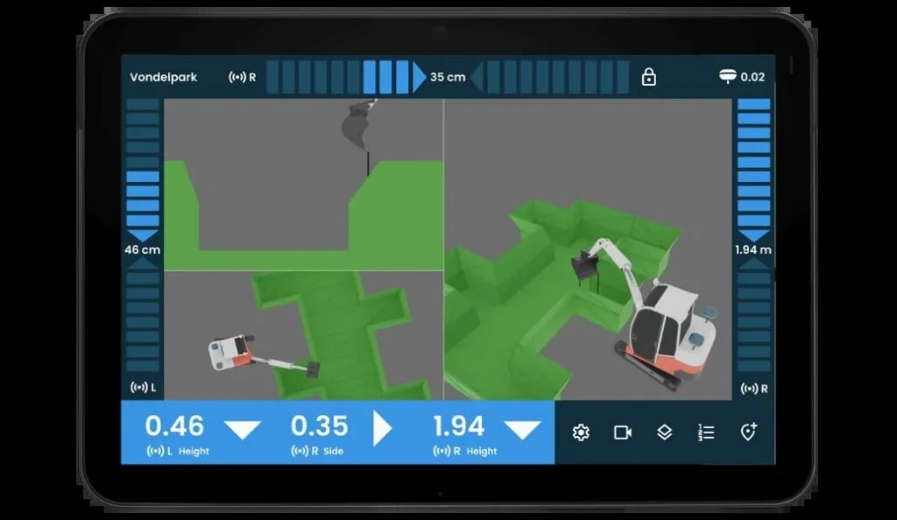

Projects
A few things I've built and projects I;ve worked on over the years.

UNI-Machine (marXact)
3D GPS machine control for excavators. Load in your design, follow it live in the cabin and dig precisely. The KLIC map runs in the background, so you always know where the cables and pipes are. Within UNI-machine I worked on the UI, code structure, KLIC data retrieval, new features, customer support and QA for the product.
Working with the team for 2,5 years, I picked up skills such as UX/UI design, code architecture, C# in Unity, Web/API calls, CAN bus communication and QA practices.

Mountain meets Procedural Content Generation
A procedurally generated mountain environment in Unity, built from layered Perlin noise so the terrain never relies on a predefined layout. An A* pathfinding algorithm calculates walkable routes that account for slope cost and dodge trees, and a custom shader applies different textures by altitude (base, timberline, peak).

Chase VR Experience
A VR shopping experience built for Chase, whose beach shop wanted to bring that same shopping feel to their second store 50km from the beach. Built by a student group, the experience let customers browse the beach shop in VR from the other location.
On the project, I worked on the system that fits clothing to mannequins, the XR rig, and animations driven by an exo suit. Along the way I picked up VR/XR development and further UX/UI and Unity/C# experience.